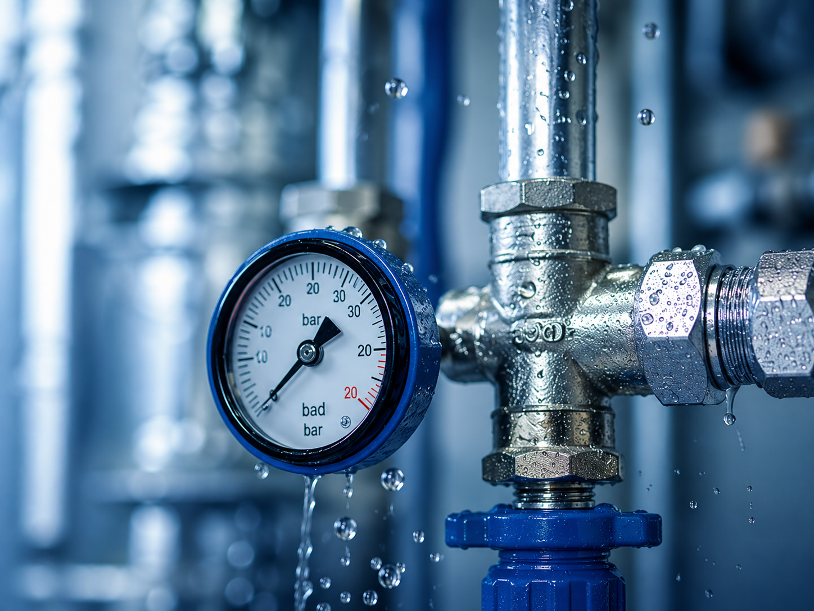

Udrażnianie kanalizacji
Wykonujemy udrażnianie i mechaniczne czyszczenie kanalizacji sanitarnej oraz deszczowej z użyciem profesjonalnego sprzętu, spiral, frez...
Dowiedz się więcej →Firma Hydro-Tester od ponad 35 lat świadczy usługi na terenie Poznania i całego kraju. Skutecznie diagnozujemy, naprawiamy i serwisujemy instalacje wodociągowe i kanalizacyjne.

Nowoczesne metody wykrywania usterek, nieszczelności i problemów w instalacjach.
Kompleksowe naprawy, konserwacje i przeglądy instalacji wodociągowych i kanalizacyjnych.
Ponad 35 lat na rynku to gwarancja doświadczenia, rzetelności i zadowolenia klientów.
Kompleksowe usługi dla instalacji wodociągowych i kanalizacyjnych.
Wykonujemy udrażnianie i mechaniczne czyszczenie kanalizacji sanitarnej oraz deszczowej z użyciem profesjonalnego sprzętu, spiral, frez...
Dowiedz się więcej →Przeprowadzamy monitoring rur i kanałów profesjonalnymi kamerami inspekcyjnymi, z podglądem obrazu i możliwością dokumentacji badania....
Dowiedz się więcej →Wykonujemy prace przy sieciach wodnych, cieplnych, kanalizacji deszczowej i sanitarnej, odwodnieniach, drenażach oraz zbiornikach....
Dowiedz się więcej →Wykonujemy prace instalacyjne wewnątrz budynków: woda ciepła, cyrkulacja, zimna woda, kanalizacja sanitarna, C.O., p-poż. i instalacje ...
Dowiedz się więcej →Ozonowanie to skuteczna metoda dezynfekcji i neutralizacji uciążliwych zapachów po awariach, zalaniach i eksploatacji pomieszczeń....
Dowiedz się więcej →Proponujemy doradztwo techniczne w zakresie instalacji wodnych, kanalizacyjnych, grzewczych, technologicznych i przemysłowych....
Dowiedz się więcej →Prowadzimy całodobowy serwis instalacji wodnych, kanalizacyjnych, sprężonego powietrza, technologicznych, C.O. i węzłów cieplnych....
Dowiedz się więcej →Zamrażanie rur to specjalistyczna metoda odcięcia przepływu wody w instalacji bez konieczności jej opróżniania lub posiadania sprawnego zaworu....
Dowiedz się więcej →Projektujemy i instalujemy systemy monitoringu wizyjnego CCTV dla budynków mieszkalnych i obiektów komercyjnych. Kamery IP i analogowe, rejestratory DVR/NVR....
Dowiedz się więcej →Hydro-Tester to firma z ponad 35-letnim doświadczeniem w branży instalacji wodociągowych i kanalizacyjnych.
Działamy na terenie Poznania i całej Polski, zapewniając profesjonalne usługi, rzetelne podejście i praktyczną wiedzę. Stawiamy na jakość, niezawodność oraz długotrwałe relacje z naszymi klientami.

Ponad 35 lat praktyki w branży.
Działamy sprawnie i terminowo.
Korzystamy z zaawansowanych technologii.
Uczciwe podejście i najlepsze rozwiązania.
Jesteśmy gotowi pomóc — szybko, skutecznie i profesjonalnie.